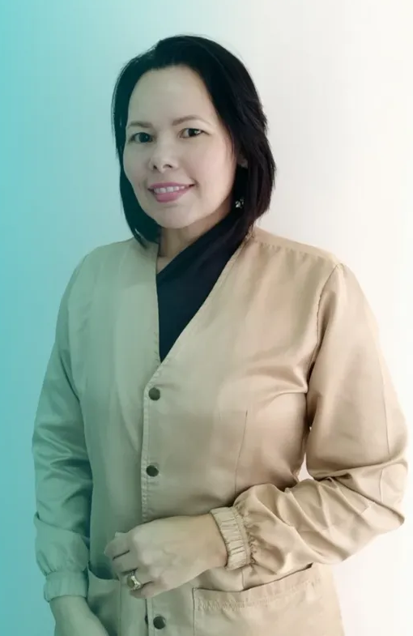
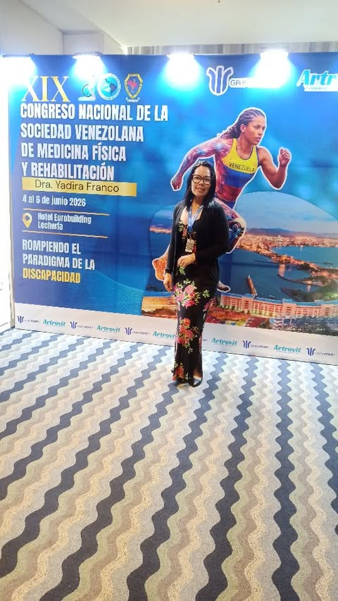
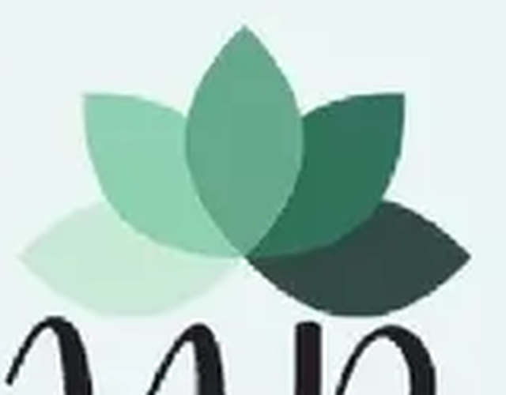

PrimeroDiagnóstico especializado, clínico y funcional
No basta con saber qué te duele: hay que medir cómo se mueve tu cuerpo y por qué dejó de hacerlo bien.
- Exámenes clínicos
- Estudios electrodiagnósticos
- Ecografía musculoesquelética
Medicina Física y Rehabilitación
Barcelona, Anzoátegui
Dra. Nuramí Alejandra Rojas Fernández Médico Fisiatra · Neuralterapeuta · Ozonoterapia
“Ser Fisiatra es mucho más que tratar un dolor.”

“Ser Fisiatra es mucho más que tratar un dolor; es entender la biomecánica de tu cuerpo y devolverte la autonomía.” Dra. Nuramí Rojas · Médico Fisiatra
Lo que te prometo
Marca lo que más se te parece. Con eso te preparo el mensaje y me escribes ya con contexto: así no empezamos de cero cuando nos leamos.
ACV, lesiones medulares, Parkinson.
Artrosis, lesiones deportivas, dolor crónico.
Dos etapas de la vida, el mismo objetivo: devolver la autonomía.
Prescripción y diseño de prótesis y órtesis.
“Te ayudo en el alivio del dolor, equilibrio de tu salud y bienestar.”
Tres frentes de trabajo que casi nadie explica y que definen la consulta: diagnosticar la función, intervenir el dolor y dirigir al equipo que te acompaña.
No basta con saber qué te duele: hay que medir cómo se mueve tu cuerpo y por qué dejó de hacerlo bien.
Procedimientos mínimamente invasivos, hechos en consulta, para tratar el dolor donde se está originando.
La rehabilitación no la hace una sola persona. El fisiatra coordina a quienes te acompañan en el proceso.
“El objetivo es devolver la autonomía.”
La puerta de entrada: evaluación clínica y funcional para entender qué falla en tu movimiento y trazar el plan de trabajo.
Abordaje sobre el sistema nervioso para trabajar el dolor desde donde se origina, y no solo donde se siente.
Aplicación de ozono médico como complemento dentro del plan de rehabilitación en cuadros de dolor e inflamación.
Mirada integrativa sobre el equilibrio del cuerpo, para acompañar la recuperación más allá de la lesión puntual.

Escríbeme por WhatsApp y coordinamos tu cita. Cuéntame qué te pasa y desde cuándo: con eso ya tenemos por dónde empezar.
Escríbeme por WhatsApp